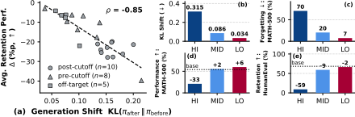

A younger student learns best from an older sibling's notes, not from a professor's textbook. The sibling rewrites each lesson in words the student already uses, and any note with a wrong answer is thrown away. New facts arrive without disturbing everything the student already knew.
어린 학생은 교수의 교과서보다 손위 형제의 노트로 가장 잘 배운다. 형제는 학생이 이미 쓰는 말로 수업을 하나씩 고쳐 쓰고, 답이 틀린 노트는 버린다. 그래서 새 지식이 들어와도 학생이 원래 알던 것들이 흔들리지 않는다.
How it works: rewrite, filter, fine-tune작동 방식은 고쳐 쓰고, 거르고, 미세조정하기
The aligner is chosen for closeness to the student, not for strength. Its rewrites keep the gold answer but use phrasing the student already finds likely.
정렬 모델은 성능이 아니라 학생과의 가까움으로 고른다. 고쳐 쓴 글은 정답은 그대로 두되 학생이 이미 그럴듯하다고 여기는 표현을 쓴다.
- Pick the closest sibling.가장 가까운 형제를 고른다.For Qwen2.5-0.5B to 3B students, Qwen2.5-7B or 14B rewrites the data.Qwen2.5-0.5B~3B 학생에게는 Qwen2.5-7B나 14B가 데이터를 고쳐 쓴다.
- Filter offline.오프라인으로 거른다.Going off-policy is what makes rejection sampling possible; it also trims 17.1% of tool-use data.오프폴리시로 가야 거부 샘플링이 가능하다. 도구 사용 데이터는 이 과정에서 17.1% 줄어든다.
- Train with no new knobs.새 하이퍼파라미터 없이 학습한다.Same SFT settings as the baseline; nothing extra to tune.기준선과 같은 SFT 설정을 쓰고, 따로 조정할 것이 없다.
Key finding: distribution shift is the forgetting meter핵심 발견은 분포 이동이 곧 망각의 계기판이라는 것
The further a dataset pushes the model's distribution, the more it forgets, even with the same problems. The model's own verified answers (LO) gain the most and forget the least.
데이터가 모델 분포를 멀리 밀수록 더 많이 잊고, 같은 문제를 써도 마찬가지다. 모델이 직접 맞힌 답(LO)이 가장 많이 얻고 가장 적게 잊는다.

Results: most learned, least forgotten가장 많이 배우고 가장 적게 잊는다
SynthSelf is the only method that clearly beats plain SFT on acquisition at these sizes. SDFT and DFT fall below SFT once the student is small.
이 크기에서 습득 점수로 일반 SFT를 확실히 넘는 방법은 SynthSelf뿐이다. 학생이 작아지면 SDFT와 DFT는 SFT보다 못하다.
A closer aligner beats a stronger one, and costs far less. Bigger cross-family models write more correct data but drift further from the student.
더 강한 정렬 모델보다 더 가까운 정렬 모델이 낫고, 비용도 훨씬 적다. 계열이 다른 큰 모델은 정답률은 높지만 학생 분포에서 더 멀어진다.
| Aligner | Acquisition | NLL | Data acc. (%) | PFLOPs |
|---|---|---|---|---|
| Qwen2.5-7B (same family) | 66.8 | 0.995 | 99.0 | 13.9 |
| Qwen2.5-14B (same family) | 64.1 | 1.033 | 99.1 | 36.6 |
| Qwen3.5-27B | 65.1 | 1.440 | 90.3 | 70.0 |
| Gemma-4-31B | 60.8 | 1.245 | 99.8 | 148.2 |
Before fine-tuning a small model, score candidate data by the student's own NLL; it predicts forgetting better than the teacher's accuracy does. When a bigger model writes the targets, choose the nearest sibling, not the strongest.작은 모델을 미세조정하기 전에 후보 데이터를 학생의 NLL로 먼저 채점하자. 교사의 정답률보다 망각을 더 잘 예측한다. 큰 모델에게 학습 목표를 쓰게 한다면 가장 강한 모델이 아니라 가장 가까운 형제 모델을 고르자.
All students are Qwen2.5 at 0.5–3B, retention only ties the best baseline and still sits about 1 point under the base model, and medicine shows no gain over distillation. The shift–forgetting link is a correlation from one 3B model.학생은 모두 0.5–3B 크기의 Qwen2.5뿐이다. 유지 점수는 최고 기준선과 같을 뿐이며 여전히 기본 모델보다 1점가량 낮고, 의료 분야에서는 증류보다 나은 점이 없다. 분포 이동과 망각의 관계도 3B 모델 하나에서 본 상관관계다.